전자산업기사 (2006-09-10 기출문제)
1과목: 전자회로
1. 다음 회로에서 R1 = 1[kΩ], R2 = 100[kΩ], R3 = 1[kΩ], R4 = 100[kΩ], V1 = 8.5[V], V2 = 8[V]일 때, V0는 몇 [V] 인가?
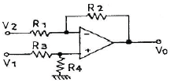
- 10[V]
- 50[V]
- 30[V]
- 20[V]
(정답률: 74%)

2. α 차단 주파수가 50[MHz]인 트랜지스터의 C-E 때의 β 차단 주파수는 약 몇 [MHz] 인가? (단, β = 50 이다.)
- 0.5[MHz]
- 1[MHz]
- 1.5[MHz]
- 2[MHz]
(정답률: 69%)
3. 중심 주파수가 15[kHz]이고, 대역폭이 1[kHz]인 대역 통과 필터의 Q 값은?
- Q = 1/15
- Q = 15
- Q = 1/10
- Q = 10
(정답률: 54%)
4. 다음 그림의 회로 명칭은?
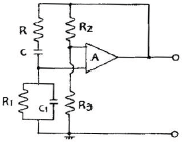
- 전압제어형 윈 브리지 발진회로
- 이상(移相)형 발진회로
- R-C 결합 증폭회로
- 전류제어형 윈 브리지 발진회로
(정답률: 44%)
5. 다음 중 전력 증폭기의 설명으로 옳은 것은?
- B급 증폭기의 최대 효율은 10% 이하이다.
- C급 증폭기는 차단점 이사에서 바이어스 된다.
- C급 증폭기는 전력 손실이 많아 출력 전력이 적다.
- A급 증폭기는 Q점이 부하선의 중앙에 위치해야 최대출력을 얻을 수 있다.
(정답률: 70%)
6. 이상적인 차동 증폭기의 동상 제거율(common mode rejection ratio)은?
- 1
- 0
- ∞
- -1
(정답률: 69%)
7. 트랜지스터의 정특성에서 VCE = 7.5[V]일 때 IB를 100[μA]에서 250[μV]까지 변화시키니 VBE가 0.2[V]에서 0.3[V]로 되었다면 이 트랜지스터의 hie는 약 얼마인가?
- 200[Ω]
- 667[Ω]
- 30[kΩ]
- 75[kΩ]
(정답률: 58%)
8. 시미트 트리거(schmitt trigger) 회로에 대한 설명 중 옳지 않은 것은?
- 구형파 발생회로
- 입력전압의 크기로서 회로의 개폐(on, off)를 결정해준다.
- 외부 클록 펄스가 필요하다.
- 쌍안정 멀티바이브레이터의 일종이다.
(정답률: 69%)
9. 다음 중 직렬 전압 궤환의 특징이 아닌 것은?
- 입력 및 출력 임피던스의증가
- 주파수 대역폭의 증가
- 비직선 일그러짐의 감소
- 전압 이득의 안정
(정답률: 76%)
10. 차동증폭회로에서 차동이득 Ad = 10 이고, 동상이득 Ac = 0.01 이면 동상신호제거비(CMRR)는 몇 [dB] 인가?
- 10
- 30
- 60
- 100
(정답률: 46%)
11. 듀티 사이클(duty cycle)이 0.1이고 펄스폭이 0.4[μs]인 펄스의 주기는?
- 1[μs]
- 2[μs]
- 3[μs]
- 4[μs]
(정답률: 80%)
12. 그림과 같은 회로의 명칭은?
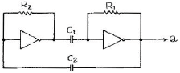
- 카운터
- 쌍안정 멀티바이브레이터
- 단안정 멀티바이브레이터
- 비안정 멀티바이브레이터
(정답률: 57%)
13. 다음 중 정류회로의 효율을 올바르게 나타낸 것은?
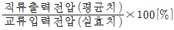
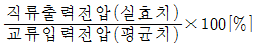
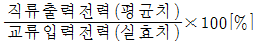
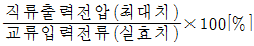
(정답률: 40%)
14. 전압 이득이 80[dB]인 증폭기에 궤환율이 0.01인 부궤환을 걸었을 때 증폭기의 이득은 약 얼마인가
- 20[dB]
- 30[dB]
- 40[dB]
- 60[dB]
(정답률: 64%)
15. 회로에서 입력 단자와 출력 단자가 도통되는 상태는?
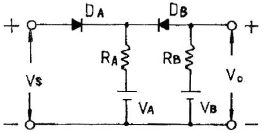
- VS ＞ VB, VA ＜ VB
- VS ＜ VA, VA ＜ VB
- VS ＜ VA, VS ＞ VB
- VS ＞ VA, VS ＜ VB
(정답률: 73%)
16. 전력 증폭기의 직류 공급 전력은 10[V], 400[mA]이고, 부하에서의 출력 전력은 3.6[W]일 때 이 증폭기의 효율은?
- 70[%]
- 75[%]
- 90[%]
- 95[%]
(정답률: 71%)
17. RC 결합 증폭기에서 저주파 특성을 제한하는 요소가 되는 것은?
- 결합용량
- 분포용량
- 전압 혹은 전류이득
- 극간(혹은 접합)용량
(정답률: 71%)
18. 트랜지스터의 이미터 접지와 베이스 접지와의 관계 중 이미터 순방향 전류 이득을 hfe , 베이스 순방향 전류 이득을 hfb 라고 할 때 옳은 관계는?
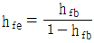
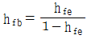
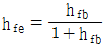
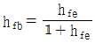
(정답률: 25%)
19. 다음 Bias 회로 중 안정계수 S가 가장 큰 Bias 회로는? (단, 모든 회로(기본회로) 조건은 동일하다.)
- 고정 Bias 회로
- 전압 궤환 Bias 회로
- 전류 궤환 Bias 회로
- 트랜지스터를 사용한 비선형 Bias 회로
(정답률: 41%)
20. 궤환 발진기에서 바크하우젠(Barkhausen)의 발진 조건을 표시한 것으로 옳은 것은?
- βA ＞ 1
- βA ＜ 1
- βA = 2
- -βA = 1
(정답률: 62%)
2과목: 전기자기학 및 회로이론
21. 매초마다 S 면을 통과하는 전자에너지를 W = ∫ㆍPnㆍdS [W]로 표시하는데 이 중 틀린 설명은?
- P의 방향은 전자파의 진행방향과 다르다.
- n 이 내향일 때는 S 면내에 공급되는 총 전력이다.
- 벡터 P를 포인팅 벡터라 한다.
- n 이 외향일 때는 S 면에서 나오는 총 전력이 된다.
(정답률: 53%)
22. 1[m]의 간격을 가진 선간전압 66,000[V]인 2개의 평행 왕복 도선에 10[kA]의 전류가 흐를 때, 도선 1[m]마다에 작용하는 힘의 크기는 몇 [N/m] 인가?
- 1
- 10
- 20
- 200
(정답률: 34%)
23. 공기 중에서 반지름 a9m0, 도선의 중심축간 거리 d[m]인 평행 도선간의 정전용량은 몇 [F/m] 인가?(단, d≫a 이다.)
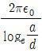
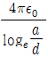
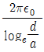
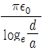
(정답률: 33%)
24. 유전율 εo인 진공내를 전자파가 전파할 때 진공 중의 투자율은 약 몇 [H/m] 인가?
- 9.56×10-7
- 12.56×10-7
- 15.56×10-7
- 18.56×10-7
(정답률: 75%)
25. 압전기 현상에서 응력과 분극이 동일 방향으로 발생하는 경우를 무슨 효과라 하는가?
- 횡효과
- 종효과
- 역효과
- 직접효과
(정답률: 75%)
26. 원점 주위의 전류밀도가
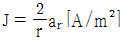
의 분포를 가질 때 반지름 5[cm]의 구면을 지나는 전 전류는 몇 [A]인가?- 0.1π
- 0.2π
- 0.3π
- 0.4π
(정답률: 37%)
27. 비유전율 10인 기름속에 10-3C의 전하가 각각 놓여있다. 두 전하간에 0.92[kg]의 힘이 작용할 때, 두 전하는 몇 [m] 떨어져 있는가?
- 3
- 3.5
- 8
- 10
(정답률: 25%)
28. 히스테리시스손은 최대 자속밀도의 몇 승에 비례하는가?
- 1.6
- 2
- 2.6
- 3.2
(정답률: 60%)
29. 자유공간에서 정전계의 기본 법칙 중 틀린 것은?
- VㆍE = ρv/ε0
- øSㆍds = Q/ε0
- div 0 = ρ
- ∇×E = J
(정답률: 49%)
30. 평등 자계 내에 자계와 수직방향으로 일정 속도의 전자를 입사시킬 때 전자의 궤적은?
- 쌍곡선
- 포물선
- 직선
- 원
(정답률: 52%)
31. 10[μF]의 콘덴서에 100[V], 60[Hz]의 교류 전압을 인가할 때의 전류는 약 몇 [A] 인가?
- 0.3768[A]
- 0.7536[A]
- 1.1304[A]
- 1.5072[A]
(정답률: 50%)
32. 100[mH]인 코일에 100[V], 60[Hz]의 교류전압을 인가했을 때 코일의 유도성 리액턴스의 값은?
- 37.68[H]
- 37.68[Ω]
- 68.25[H]
- 68.25[Ω]
(정답률: 70%)
33. 저항과 캐피시턴스 직렬회로의 시정수는?
- R/C
- C/R
- RC
- 1/RC
(정답률: 86%)
34. 그림과 같은 시간 함수를 라플라스 변환하면?
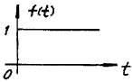
- 1
- S
- 1/S
- 1/S-1
(정답률: 73%)
35. 단위 길이당 임피던스 및 어드미턴스가 각각 Z 및 Y인 전파 정수 r 를 표시한 것은?
- ZY
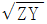
- 1/ZY
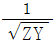
(정답률: 70%)
36. 10[μH]의 인덕터와 40[pF]의 캐피시터가 동조시키는 주파수는 약 얼마인가?
- 15.9[MHz]
- 50[MHz]
- 31.8[MHz]
- 7.96[MHz]
(정답률: 26%)
37. 이상 변압기의 권선비가 N1 : N2 = 1 : 2일 때 a, b 단자에서 본 임피던스는?
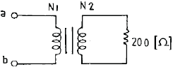
- 50[Ω]
- 100[Ω]
- 200[Ω]
- 400[Ω]
(정답률: 59%)
38. 어떤 회로에서 인가 전압이 100[V]일 때 유효전력이 300[W], 무효전력이 400[Var]이라면 전류[A]는?
- 3[A]
- 4[A]
- 5[A]
- 50[A]
(정답률: 39%)
39. 다음과 같은 회로에서, 임피던스 파라미터의 개방 순방향 전달 임피던스는?
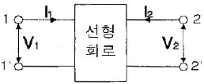
- Z11 = V1/I1
- Z21 = V2/I2
- Z12 = V1/I2
- Z22 = V2/I2
(정답률: 21%)
40. R-L 직렬 회로에서 교류 전압을 가했더니 R 양단에 4[V], L 양단에 3[V]가 나타났다. 이 때 인가 전압은?
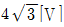
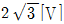
- 7[V]
- 5[V]
(정답률: 54%)
3과목: 전자계산기일반
41. 다음 논리 연산 중 이항(binary) 연산에 해당되는 것은?
- Move
- Complement
- Shift
- AND
(정답률: 69%)
42. 중앙처리장치의 하드웨어 요소를 기능별로 나누었을 때 해당되지 않는 것은?
- 기억 기능
- 입력 기능
- 전달 기능
- 제어 기능
(정답률: 39%)
43. 서로 다른 변수가 같은 기억 장소를 가질 때 생기는 착오 현상을 무엇이라고 하는가?
- Dynamic nesting
- Side effects
- Aliansing
- Binding
(정답률: 52%)
44. C 언어에서 산술 연산자로 사용되는 기호는?
- &
- ^
- %
- ?
(정답률: 63%)
45. 채널로부터 주 기억장치로 데이터 전송 요구가 일어났을 때에만 채널이 버스의 사용권을 일시적으로 중앙처리 장치로부터 빼앗는 전송 방식은?
- 셀렉터 채널
- 멀티플렉서 채널
- 인터럽트
- 사이클 스틸
(정답률: 64%)
46. 전자계산기에서 다음에 시행할 명령문의 어드레스를 기억하고 있는 것은?
- 디코더
- 버퍼
- 프로그램 카운터
- 누산기
(정답률: 77%)
47. 주소(address) 지정방식이 아닌 것은?
- 직접 어드레싱(direct addrssing)
- 이미디어트 어드레싱(immediate addressing)
- 간접 어드레싱(indirect addressing)
- 임시 어드레싱(temporary addressing)
(정답률: 79%)
48. 7K word memory의 실제 word 수는?
- 1024
- 4096
- 7168
- 8193
(정답률: 84%)
49. 다음 덧셈 명령 가운데 2 주소(address) 명령 형식에 해당하는 것은?
- ADD R1, R2, R3
- ADD R1, R2
- ADD R1
- ADD
(정답률: 82%)
50. 10진수 8을 Excess-3 code로 표시하면?
- 1000
- 1001
- 1010
- 1011
(정답률: 78%)
51. 스택(Stack)에서 데이터의 입ㆍ출력 처리 방법은?
- 선입선출법(FIFO)
- 후입선출법(LIFO)
- 큐(Queue)
- 데크(Deque)
(정답률: 66%)
52. 코딩을 하면 바로 프로그램이 작성될 수 있을 정도로 가장 세밀하게 그려진 순서도는?
- 개략 순서도
- 상세 순서도
- 시스템 순서도
- 처리 순서도
(정답률: 82%)
53. 순차 액세스(sequential access) 방식을 사용하는 보조기억장치는?
- 자기테이프 장치
- 자기디스크 장치
- 반도체 메모리
- 자기드럼 장치
(정답률: 50%)
54. STACK에 대하여 올바르게 설명한 것은?
- 인터럽트가 발생한 경우 복귀번지를 저장하기 위하여 사용하는 메모리이다.
- POP 명령만으로 데이터를 처리한다.
- 두개의 오퍼랜드를 필요로 한다.
- FIFO 구조를 갖는다.
(정답률: 67%)
55. 마이크로프로세서가 기억장치 및 입ㆍ출력기기와 연결을 위해 가져야 할 것이 아닌 것은?
- 데이터 버스
- 어드레스 버스
- 결합 버스
- 제어선
(정답률: 62%)
56. 다음 중 문자를 삽입할 때 필요한 연산은?
- MOVE
- OR
- AND
- ROTATE
(정답률: 52%)
57. 마이크로컴퓨터에서 입ㆍ출력 인터페이스가 사용되지 않는 것은?
- 기억장치
- 보조기억장치
- 입력장치
- 출력장치
(정답률: 54%)
58. A = 0101 1001, B = 0110 1011 일 때 A와 B의 논리 AND 연산결과는?
- 0101 1001
- 0100 1011
- 0100 1001
- 1001 0100
(정답률: 66%)
59. 어떤 시스템에서 데이터의 전송 속도가 200[bps]라고 할 때 이 시스템에 10초간 전송하는 데이터는 모두 몇 [bit] 인가?
- 2
- 20
- 200
- 2000
(정답률: 88%)
60. 입ㆍ출력 장치에서 자료처리 방법에 해당되지 않는 것은?
- 프로그램 입ㆍ출력 방식
- 인터럽트 입ㆍ출력 방식
- 직접 메모리 전송 방식(DMA)
- 병렬 연산처리 방식
(정답률: 53%)
4과목: 전자계측
61. 역률이 0.001 인 콘덴서의 Q는 얼마인가?
- 10
- 100
- 1000
- 11000
(정답률: 85%)
62. 다음 중 지시계기의 구비 조건으로 옳지 않은 것은?
- 정확도가 높고, 오차가 적을 것
- 눈금이 균등하거나 대수 눈금일 것
- 구조가 튼튼하고, 취급하기가 편리할 것
- 응답도(responsibility)가 낮을 것
(정답률: 87%)
63. 스위프주파수 발생기의 기본 블록도에서 □ 안의 발진기는?
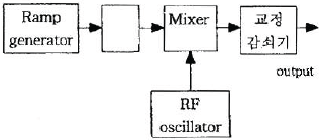
- VCO(voltage controlled oscillator)
- 고주파 발진기
- 펄스 발진기
- 저주파 발진기
(정답률: 56%)
64. 다음 중 잡음지수 F는? (단, Si : 입력신호, Ni : 입력잡음, So : 출력신호, No : 출력잡음)
- F = SiNo/SoNi
- F = SoNo/NiSi
- F = SiNo/NoSo
- F = SoNi/NoSi
(정답률: 64%)
65. 전자회로의 주파수 특징을 시험하는데 관계없는 것은?
- 오실로스코프
- 스위프 신호 발생기
- 마커 신호 발생기
- 맥스웰 브리지
(정답률: 70%)
66. 지시 각을 θ 라 하면 스프링 제어장치의 토크는?
- θ 에 비례한다.
- θ2 에 비례한다.
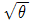
에 비례한다.- 1/θ 에 비례한다.
(정답률: 60%)
67. 다음 중 싱크로스코프로 직접 측정할 수 없는 것은?
- 주파수
- 위상
- 전압파형
- 회전수
(정답률: 71%)
68. 다음 중 C-M형 전력계로 측정되는 것은?
- 부하의 정합 상태를 알 수 있다.
- 고주파 전류 측정도 할 수 있다.
- 임피던스 측정을 할 수 있다.
- 저주파에 널리 사용한다.
(정답률: 49%)
69. 다음 기록계 중 영위법(zero method)에 해당되는 것은?
- 직동식 기록계
- 타점식 기록계
- 자동 평형식 기록계
- X-Y 기록계
(정답률: 78%)
70. 어떤 전원 장치의 무부하시 전압이 220[V]였는데 정격 부하의 전압이 180[V]가 되었다. 이때의 전압 변동률은 약 얼마인가?
- 22.2[%]
- 18.6[%]
- 16.6[%]
- 11.2[%]
(정답률: 74%)
71. 불규칙한 비주기성 파형 또는 한 번 밖에 일어나지 않는 현상의 파형 측정에 적당한 계기는?
- 주파수 카운터
- 싱크로스코프
- VTVM
- 엡스타인 장치
(정답률: 82%)
72. 칼로리 미터법에 의해 고주파 전력을 측정하는 식으로 옳은 것은? (단, 인입구 온도 T1[℃], 출구의 온도 T2[℃], 냉각수의 유량을 Q[cc/min]라 할 때)
- P = KQ(T2+T1)[W]
- P = KQ(T1-T2)[W]
- P = KQ(T1×T2)[W]
- P = KQ(T2-T1)[W]
(정답률: 75%)
73. 다음 중 오실로스코프로 측정 불가능한 것은?
- 전압
- 변조도
- 주파수
- 코일의 Q
(정답률: 82%)
74. 교류, 직류 어느 것에 사용하여도 동일한 지시치를 주며, 정밀급으로서 가장 중요한 계기는?
- 검류계
- 가동철편형
- 전류력계형
- 열전대형
(정답률: 70%)
75. 계기정수 2400[Rev/kWh]의 적산전력계가 30초에 15 회전했을 때의 전력[W]은?
- 500
- 750
- 1000
- 1250
(정답률: 55%)
76. 오차에 대한 설명으로 옳지 않은 것은?
- 개인적 오차 : 읽는 사람에 따라 생기는 오차
- 우연 오차 : 측정 조건이 나쁘거나 측정자의 주의력 부족에 의한 오차
- 이론적인 오차 : 측정 조건의 변동, 측정자의 주의력 동요에 의한 오차
- 계통적인 오차 : 일정한 원인, 눈금의 부정호가, 외부 자장 등에 의한 오차
(정답률: 64%)
77. 정전 용량이나 유전체 손실각을 측정하는 브리지는?
- 셰링 브리지
- 공진 브리지
- 윈 브리지
- 캠벨 브리지
(정답률: 86%)
78. 소인 발진기를 사용할 때 병행하는 계기는?
- 고주파 발진기
- 감쇠기
- 진공관 전압계
- 오실로스코프
(정답률: 80%)
79. 그림과 같은 교류 브리지가 평형되었을 때 L의 값은?
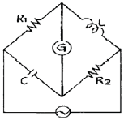
- L = R2/R1C
- L = CR1R2
- L = C/R1R2
- L = R1R2/C
(정답률: 60%)
80. 1[Ω] 이하의 저저항 측정에 사용되는 브리지는?
- 휘트스톤 브리지
- 캘빈더블 브리지
- 맥스웰 브리지
- 헤비사이드
(정답률: 83%)